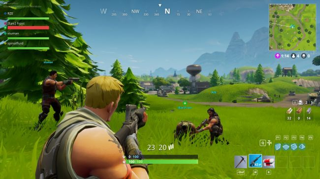

Fortnite's controversial Battle Royale mode is now live
The 100-player last-man-standing expansion, which PUBG execs accused of plagiarism, is now free for everyone.

Fortnite Battle Royale, the 100-player last-man-standing mode that caused such consternation and heartache at PUBG studio Bluehole, is now live and free for everyone. The 1.6.3 update released today also brings Duos and Squad match types that enable players to square off in pairs or groups of up to four, three new weapons, and an array of tweaks and bug fixes.
Four-player Squad matches are live now, while the two-player Duos will be activated once there are enough players to support matchmaking in both modes, Epic said. Teams can be filled by inviting people on your Friends List, or through the "Fill" option, which will automatically top it up. Other relevant points:
- When your health falls to zero you’ll be “down but not out” (DBNO). Your squadmates only have a short amount of time to revive you before your health bar drains.
- You can see your team members’ status on the HUD, including Health and Shields.
- Use the map to place location markers which are visible to your team and will display on the compass at the top of the HUD. Keep an eye out for markers from your squad!
- Cooperate with team members to build awesome defensive structures!
- Friendly-fire is enabled, so be careful where you aim! Intentionally attacking squadmates violates the code of conduct.
The new update also enables Supply Drops, which will occasionally deliver crates filled with weapons and equipment to the battlefield. The new Scoped Assault Rifle is a lot like the base model but with a scope—hence the name—and is best used against medium-to-long targets, while the Tactical Submachine Gun is a rough-looking piece with a high rate of fire that's best at medium ranges. And finally, there's the Zapotron, which can fire short bursts of electric blasts or one big zap—but kind in mind that ammo for this beast "is extremely limited."
We took a closer look at Fortnite Battle Royale earlier today, which you can dig into right here. I won't spoil it for you, but I will say that you probably don't want to uninstall PUBG just yet. The full FBR patch notes are available at epicgames.com.